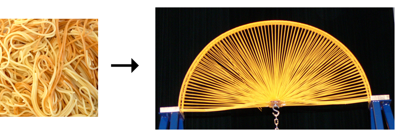
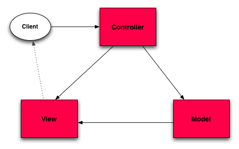
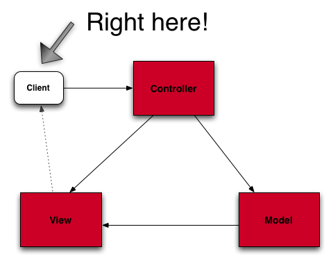
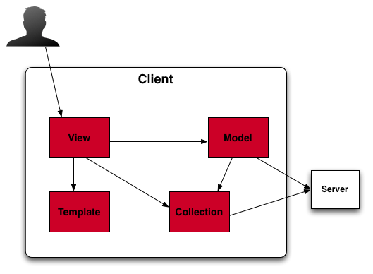
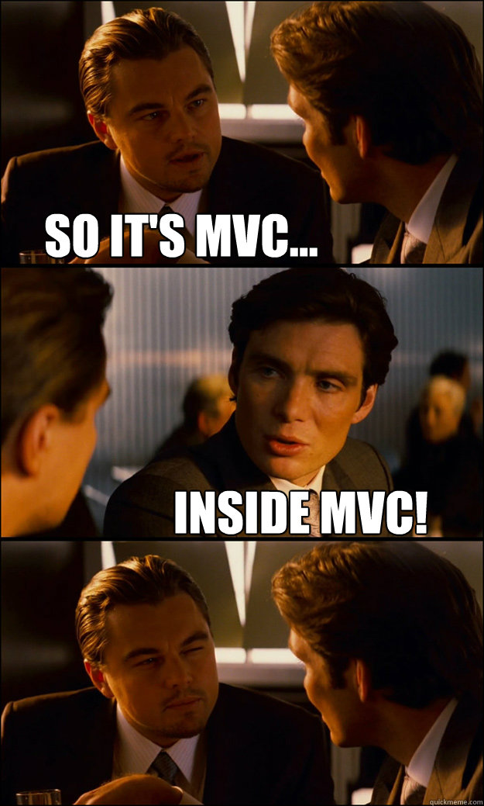

Give a backbone to your web apps
Simão Mata - @simaom
http://spreadd.com
Why do you need Backbone
You Don't
You need Structure
Structure, you say?
Every application needs structure, a web app is not an exception
Typical problems:
Spaghetti code
Presentation code coupled with data
Presentation code mixed with business logic
Event handling code scattered all over the application
No Structure?
So, how do we solve this?

So, how do we solve this?
The same way we solve it in other app
Model, View, Controller
Typical MVC implementation for a Web Application

Server-side MVC
MVC provides structure to your server side application.
Separation of concerns Business logic is
isolated from the user interface code and the persistence layer
mechanism
Minimizes Coupling Every component can work
independently from each other
What about all that client code?
Enter Backbone JS
Not your Rails/Django/... MVC
Backbone supplies structure to web applications by providing
Models, Collections, Views and Events
Backbone.Model Like a Rails/Django model, wraps data with business logic
Backbone.View A re-usable piece of UI, often associated with a model. Dispatches events that originate from the UI
Backbone.Collection A group of models on the client-side
Templates Like Rails .html.erb views or Django templates
Where's the controller?
Backbone uses Backbone.Router to map urls and hashes to functions
Where do I put my client side MVC?

It's client side...


Backbone.Model
Models contain the web app data and a big part of it's logic:
conversions, validations, computed properties, etc
Powerful wrapper around a JSON object
Like a traditional Model, but with a simpler API
Able to sync with a server side RESTful JSON API
But you don't need a RESTful API
Event binding support for many different event types,
(e.g. change of an attribute, refresh, etc...)
Extend Backbone.Model with your domain-specific methods
Backbone.Collection
An object containing many instances of a model class
Can update itself using via AJAX using a simple method call
Allows event binding to change events on any model in the collection
Supports most Underscore JS array functions, inspired by Ruby's Enumerable methods
Backbone.Collection Code
var Library = Backbone.Collection.extend({
model: Book
});
var myLibrary = new Library;
myLibrary.add(new Book({title: "The Time Machine"}));
var myBook = myLibrary.first();
console.log(myBook.get('title'));
Backbone.Views
They don't determine anything about your HTML, that's the template's job
They glue the model with the template
The idea is to organize the interface into logical views,
backed by models, each of which can be updated independently when
the model changes
You can bind a your view's render function to a
model change event